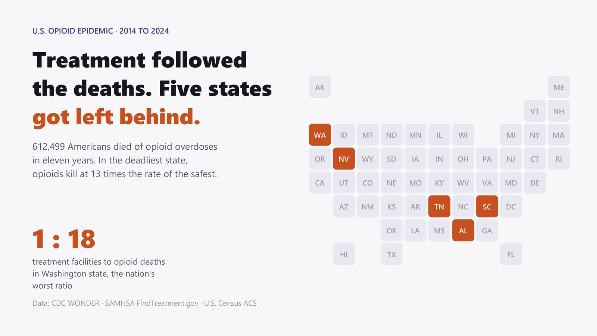

01
One Facility for Every Eighteen Deaths
Eleven years of federal overdose mortality, 612,499 deaths, set against every treatment facility in SAMHSA's national locator. Whether the states carrying the heaviest burden hold the capacity to match, and where that breaks down.
How it was built
- Merged two CDC WONDER databases into a single 2014–2024 series, validated to the death against published NCHS totals.
- Tiered SAMHSA's 7,756 facilities by whether they can dispense methadone.
- Rank-correlated burden against capacity across 51 jurisdictions, then isolated the widest rank gaps.
- Cross-checked against deaths per facility to catch small-state artifacts.
Python, pandas, SciPy, Plotly, Requests, HTML/CSS, JavaScript